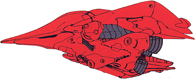

| MA-06 Val Varo High-Speed Anti-Mobile Suit Zeon Duchy Mobile Armor |
|
|  | |
General and Technical Data |
|
|
Model number: MA-06 Code name: Val Varo Unit type: high-speed mass-production mobile armor Operator: Zeon Duchy Dimensions: overall length 68.0 meters, overall width 46.0 meters, overall height 22.5 meters Weight: empty weight 254.1 metric tons; max gross weight 379.8 metric tons Construction: titanium/ceramic composite Powerplant: Minovsky type ultracompact fusion reactor, output rated at 26030 kw Propulsion: rocket thrusters: 3 x 184000 kg, 3 x 56000 kg Performance: maximum thruster acceleration 1.90 G Equipment and design features: sensors, range unknown Fixed armaments: large mega particle cannon, mounted in firing port on main body; 2 x 2-tube missile pod, mounted on main body; 2 x anti-aircraft mega particle gun, mounted on main body; 4 x 110mm vulcan gun, fire-linked, mounted on main body; 3 x plasma leader, stored on rear armor, delivers electric charge through plasma array against enemy targets |
|
| Technical and Historical Notes | |
|
The MA-05 Bigro proved its worth as a very powerful anti-warship mobile armor with great efficiency. However, its abilities against smaller targets, such as enemy mobile suits, were rather substandard. To combat this deficiency, a new complementary mobile armor was developed specifically to destroy mobile suits.
The MA-06 Val Varo proved to be this mobile armor. Based off of the Bigro's design, the Val Varo placed more emphasis on maneuverability and speed than on heavy firepower. Its body was longer but less tall than the Bigro's, giving it a smaller target silhouette from head-on. Again, two large claws were maintained to assist with the Active Mass-and-Balance Auto-Control (AMBAC) system to provide superior mobility. A large mega particle cannon is mounted under the Val Varo's nose; similar in configuration, it sports a higher rate of fire than the Bigro's main gun, though it sacrifices some of its damage output. A pair of large bore missile launchers are positioned at the rear of the Val Varo's stubby wings, and quadruple vulcan guns are mounted further back on the underside of the main body. In addition to a pair of concealed anti-aircraft mega particle guns, the Val Varo also equips a modified version of the MAX-03 Adzam's leader weapons. Rather than wires, the Val Varo's version uses a plasma array to deliver a blistering electrical charge against multiple targets, making it a highly effective unit to deal with massed enemy attacks.
Additionally, its thick, sloping armor renders it nearly impervious to small arms fire from all but the closest range. Alltogether, it is an ideal mobile armor for fighting mobile suits; however, warships are still best left to its older brother, the Bigro.
|
 RPG quick stats sheet
RPG quick stats sheet | Weapons and Features | |
|
Cockpit |
|